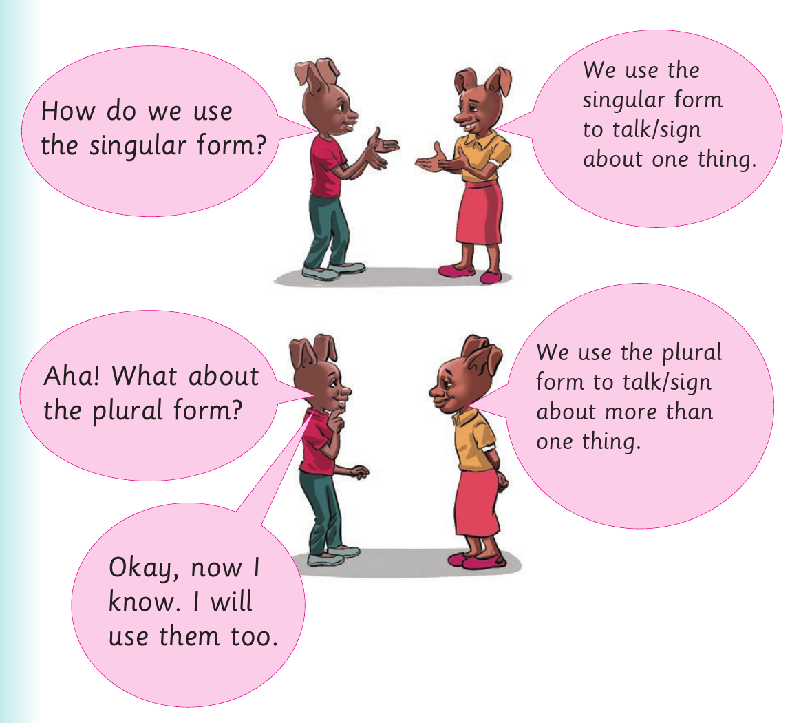
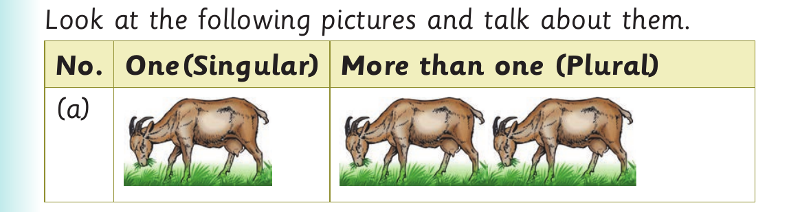

I use singular and plural forms - Objects and things found at home
I use singular and plural forms.

The boy asks, "How do we use the singular form?" The girl answers, "We use the singular form to talk or sign about one thing." The boy asks, "Aha! What about the plural form?" The girl answers, "We use the plural form to talk or sign about more than one thing." The boy says, "Okay, now I know. I will use them too."
Objects and things found at home
Activity 1
Study the following pictures and talk or sign about them.

Comparison table. Column headings: Number; One, singular; More than one, plural. Row A. A picture of one goat in the singular column; A picture of two goats in the plural column.